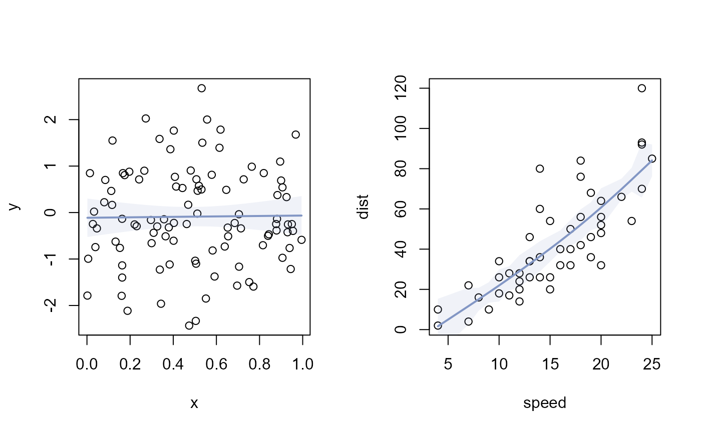
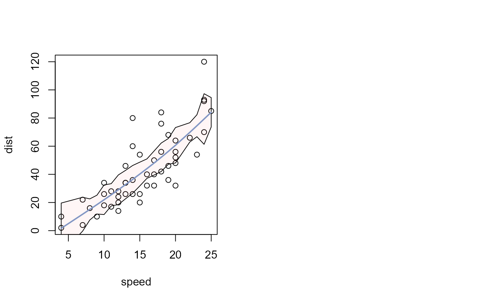

Fit a smoothing spline and optionally add confidence bands.
Arguments
- x
spline object returned by
splineX().- ...
further arguments passed to
smooth.spline.- formula
A formula of the form
lhs ~ rhs, wherelhsgives the response values andrhsthe corresponding groups or explanatory variables.- data
an optional matrix or data frame (or similar; see
model.frame) containing the variables in the formula. By default the variables are taken fromenvironment(formula).- subset
an optional vector specifying a subset of observations to be used in the analysis.
- na.action
A function which indicates what should happen when the data contain
NAs. Defaults togetOption("na.action").- weights
optional vector of weights of the same length as x.
- col
line color of the smoother.
- lwd
line width.
- lty
line type.
- type
plotting type passed to
lines.- bandArgs
controls the confidence band. May be
TRUE,FALSE,NULL,NA, or a named list. The confidence level is specified viaconf.level. Default islist(conf.level = 0.95).
Details
Confidence bands are controlled via bandArgs. These arguments can be:
FALSE,NULLorNA: suppress the bandTRUE: draw the band with default settingsa named list: customize the band appearance and confidence level
See also
Other graphics.trendlines:
lines.lm(),
lines.loess()
Examples
op <- par(no.readonly = TRUE)
par(mfrow = c(1, 2))
x <- runif(100)
y <- rnorm(100)
plot(x, y)
lines(splineX(y ~ x))
plot(dist ~ speed, cars)
lines(splineX(dist ~ speed, cars))

plot(dist ~ speed, cars)
lines(
splineX(dist ~ speed, cars),
bandArgs = list(
conf.level = 0.99,
col = addOpacity("red", 0.3),
border = "black"
)
)
#> Warning: Ignoring forbidden argument(s) for '.calcSplineCI': col, border
par(op)
